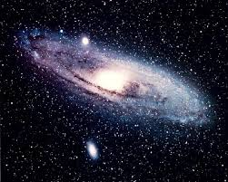
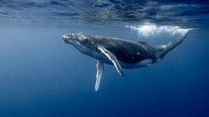
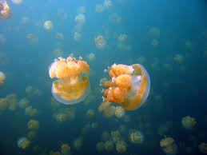
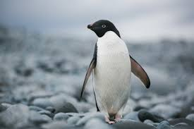

1
Солнечному свету требуется около 8 минут и 20 секунд, чтобы достичь Земли, преодолевая расстояние примерно 150 миллионов километров.
10 удивительных вещей, которые вы могли не знать

Солнечному свету требуется около 8 минут и 20 секунд, чтобы достичь Земли, преодолевая расстояние примерно 150 миллионов километров.
Человеческий мозг состоит примерно на 75% из воды и весит около 1,5 кг. При этом он потребляет около 20% энергии всего тела.
Самая высокая гора в Солнечной системе - Олимп на Марсе. Ее высота составляет около 22 км, что почти в три раза выше Эвереста.
Музыка может влиять на частоту сердечных сокращений, кровяное давление и даже уменьшать боль. Это называется "музыкальной терапией".

Сердце синего кита настолько огромно, что через его аорту мог бы проплыть взрослый человек. Вес сердца составляет около 600 кг.
Кофейные зерна на самом деле являются косточками ягод кофейного дерева. Эти ягоды называют "кофейными вишнями".

Медузы существуют на Земле более 500 миллионов лет, что делает их старше динозавров. У них нет мозга, сердца и костей.
Самая большая библиотека в мире - Библиотека Конгресса США, содержащая более 170 миллионов предметов, включая книги, рукописи и карты.
Мед никогда не портится. Археологи находили съедобный мед в древнеегипетских гробницах, возраст которого превышал 3000 лет.

Императорские пингвины могут нырять на глубину до 500 метров и задерживать дыхание на 20 минут в поисках пищи.